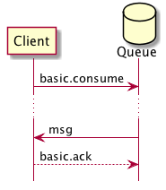
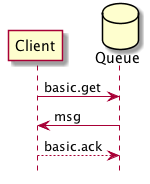
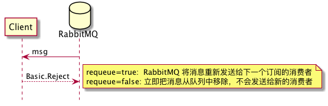
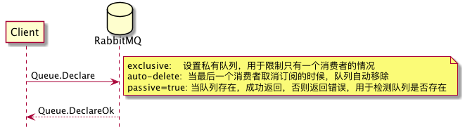
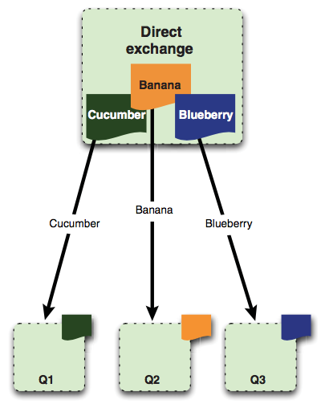
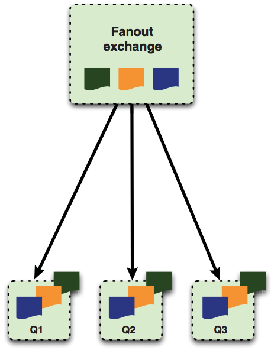
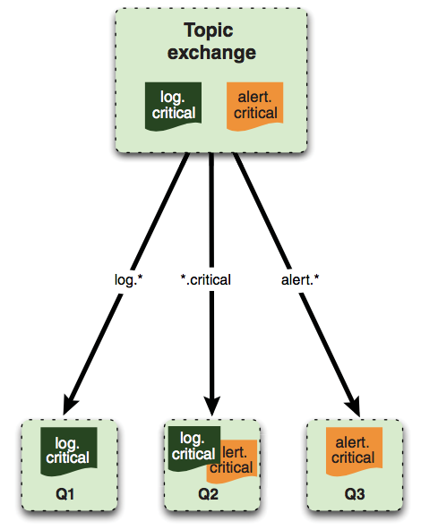
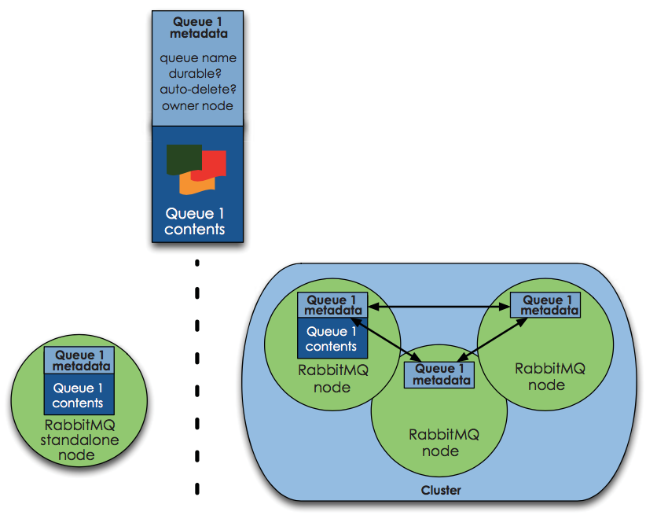
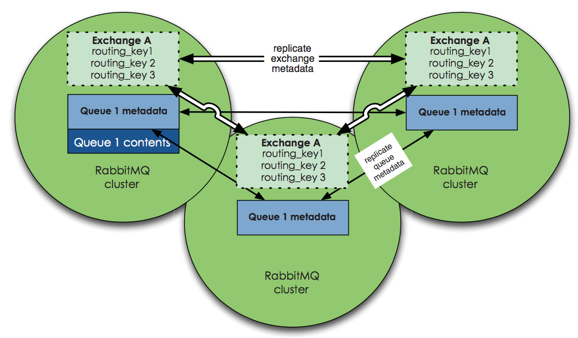

RabbitMQ
| Author | Hao Ruan (haoru@cisco.com) |
| Date | 2018-02-05 13:29:33 |
1 消息标签
- AMQP 用标签表述消息，由一个交换器名称和可选的主题标记组成。
- 在消息的路由过程中，消息的标签并没有随 payload 一起传递，如果需要明确知道是谁生产的 AMQP 消息的话，就要看生产者是否把发送方信息放入 payload 中。
2 AMQP
- 当队列拥有多个消费者，队列收到的消息将以循环的方式发送给消费者，每条消息只会发送给一个订阅的消费者。
- 消费者接收到的每条消息都必须进行确认。
- 在上一条消息确认之前，RabbitMQ 会认为这个消费者并没有准备好接收下一条消息，因此不会再给该消费者发送更多消息。
- 如果消费者收到一条消息，在确认之前断开了连接（或者从队列上取消订阅），RabbitMQ 会认为这条消息没有分发，然后重新分发给下一个订阅的消费者。
- 一个信道上可以创建多个订阅，使用
consumer_tag来标识。
2.1 订阅消息

Figure 1: 订阅
2.2 获取消息

Figure 2: 获取单个消息
basic.get命令会订阅消息，获得单条消息，然后取消订阅，因此效率不高。
2.3 拒绝消息

Figure 3: 拒绝消息
requeue=false 的意义在于：RabbitMQ 会支持一个特殊的队列（dead letter）用来存放那些被拒绝而不重入队列的消息。
dead letter 队列可以让管理者通过检测拒绝或未送达的消息来发现问题所在。
因此，如果想使用 dead letter 队列功能的话，需要使用 reject 命令，并将其设为 false 。
2.4 创建队列

Figure 4: 创建队列
- 消费者和生产者都能使用
queue.delare命令来创建队列。 - 如果消费者在同一信道上已订阅了另一个信道的话，则无法再声明队列了，必须先取消订阅。
- 当创建队列时，可以指定队列名称，如果不指定的话，RabbitMQ 会分配一个随机名称并在
queue.declare命令的响应中返回。 - 如果需要临时队列只为一个消费者服务的话，可以结合使用
auto-delete和exclusive，当消费者断开连接时，队列就被移除了。 - 发出去的消息如果路由到了不存在的队列的话，RabbitMQ 会忽略它们。因此，一般情况下，生产者和消费者都应该尝试创建队列。
3 交换器
3.1 direct
如果路由键匹配的话，消息就被投递到对应的队列。
RabbitMq 会默认实现一个类型为 direct 的，名称为空白字符串的交换器。
当声明一个队列时，一开始该队列会自动绑定到默认交换器， 并以队列名称作为路由键 。
之后可以发送 exchange.declare 命令并设置合适的参数，就可以升级成具体类型交换器。

Figure 5: direct router
3.2 fanout
将收到的消息广播的绑定的队列上。

Figure 6: fanout router
3.3 topic

Figure 7: topic router
.把路由键分为了几部分*匹配特定位置的任意文本#匹配所有规则
4 RabbitMQ 管理
4.1 启动停止
4.1.1 停止节点
rabbitmqctl stop rabbitmqctl stop -n rabbit@<nodename>
4.1.2 停止应用
rabbitmqctl stop_app
4.2 配置文件
/etc/rabbitmq/rabbitmq.config
4.3 管理用户
4.3.1 创建
rabbitmqctl add_user <username> <password>
4.3.2 删除
rabbitmqctl delete_user <username>
4.3.3 修改密码
rabbitmqctl change_password <username> <new-password>
4.3.4 查看
rabbitmqctl list_users
4.4 管理权限
每条访问控制条目由四部分组成：
- 用户
- vhost
- 需要授予的读/写/配置权限组合
- 权限范围
4.4.1 创建
rabbitmqctl set_permission -p <vhost_name> \ <username> ".*" ".*" ".*"
4.4.2 删除
rabbitmqctl clear_permissions -p <vhost_name> <username>
4.4.3 查看
rabbitmqctl list_permissions -p <vhost_name> rabbitmqctl list_user_permissions <username> # 查看某个用户在所有 vhost 上的权限
4.5 管理 vhost
- 查看
rabbitmqctl list_vhosts
- 创建
rabbitmqctl add_vhost <vhost_name>
- 删除
rabbitmqctl delete_vhost <vhost_name>
4.6 信息查询
4.6.1 查看队列
rabbitmqctl list_queues rabbitmqctl list_queues name messages consumers memory # memory 单位为字节
信息参数包括：
- name
- durable
- auto_delete
- arguments
- pid
- owner_pid
- exclusive_consumer_pid
- exclusive_consumer_tag
- messages_ready
- messages_unacknowledged
- messages_uncommitted
- messages
- acks_uncommitted
- consumers
- transactions
- memory
4.6.2 查看交换器
rabbitmqctl list_exchanges
信息参数包括：
- name
- type
- durable
- auto_delete
- arguments
4.6.3 查看绑定信息
rabbitmqctl list_bindings
参数信息包括：
- source_name
- source_kind
- destination_name
- destination_kind
- routing_key
- arguments
4.6.4 查看集群状态
包括各个节点MQ状态、镜像队列状态等
rabbitmqctl report
4.6.5 接入 Eshell
erl -setcookie abc -name test@<node-name> -remsh rabbit@<node-name> -hidden
退出时要用 Ctrl+G 然后执行 q 命令退出。
spawn(fun() -> etop:start([{output, text}, {interval, 5}, {lines, 10}, {sort, msg_q}]) end).
spawn(fun() -> etop:start([{output, text}, {interval, 5}, {lines, 10}, {sort, reductions}]) end).
5 代码示例
5.1 基本用法
5.1.1 生产者
import pika EXCHANGE = 'hello-exchange' conn_params = pika.ConnectionParameters(host='10.74.68.89', port=45672, socket_timeout=3.0) conn_broker = pika.BlockingConnection(conn_params) # 使用默认 vhost / channel = conn_broker.channel() channel.exchange_declare(exchange=EXCHANGE, exchange_type='direct', passive=False, durable=True, auto_delete=False) msg_props = pika.BasicProperties() msg_props.content_type = 'text/plain' channel.basic_publish(exchange=EXCHANGE, properties=msg_props, body='Hello World', routing_key='hola') conn_broker.close()
5.1.2 消费者
import pika EXCHANGE = 'hello-exchange' QUEUE = 'hello-exchange' TAG = 'hello-consumer' conn_params = pika.ConnectionParameters(host='10.74.68.89', port=45672, socket_timeout=3.0) conn_broker = pika.BlockingConnection(conn_params) channel = conn_broker.channel() channel.exchange_declare(exchange=EXCHANGE, # 如果没有就创建，否则继续 exchange_type='direct', passive=False, durable=True, auto_delete=False) channel.queue_declare(queue=QUEUE) channel.queue_bind(queue=QUEUE, exchange=EXCHANGE, routing_key='hola') def msg_consumer(channel, method, header, body): channel.basic_ack(delivery_tag=method.delivery_tag) print("receive: {}".format(body)) channel.basic_cancel(consumer_tag=TAG) channel.stop_consuming() channel.basic_consume(msg_consumer, queue=QUEUE, consumer_tag=TAG) # 一个 channel 可以有多个订阅，使用 consumer_tag 来标识订阅 print(' [*] Waiting for messages. To exit press CTRL+C') channel.start_consuming()
5.2 发送方确认模式
信道进入 confirm 模式，所有在信道上发布的消息都会被指派一个唯一的 ID 号（从 1 开始）。 一旦消息被投递给所有匹配队列后，信道会发送一个发送方确认模式给生产者应用程序（包含消息的唯一 ID ）。 这使得生产者知晓信息已经安全到达目的队列了。
5.2.1 生产者
#! /usr/bin/env python3 # -*- coding: utf-8 -*- import pika EXCHANGE = 'hello-exchange' conn_params = pika.ConnectionParameters(host='10.74.68.89', port=45672, socket_timeout=3.0) conn_broker = pika.BlockingConnection(conn_params) # 使用默认 vhost / channel = conn_broker.channel() channel.confirm_delivery() channel.exchange_declare(exchange=EXCHANGE, exchange_type='direct', passive=False, durable=True, auto_delete=False) msg_props = pika.BasicProperties() msg_props.content_type = 'text/plain' ack = channel.basic_publish(exchange=EXCHANGE, properties=msg_props, body='Hello World', routing_key='hola') if ack: print("confirm received") else: print("msg lost") conn_broker.close()
5.3 通过 AMQP 实时访问日志
#! /usr/bin/env python3 # -*- coding: utf-8 -*- import pika EXCHANGE = 'amq.rabbitmq.log' conn_params = pika.ConnectionParameters(host='10.74.68.89', port=45672, socket_timeout=3.0) conn_broker = pika.BlockingConnection(conn_params) channel = conn_broker.channel() result = channel.queue_declare(exclusive=True, auto_delete=True) queue_name = result.method.queue # binding_keys = ['info', 'warning', 'error'] binding_keys = ['#'] for binding_key in binding_keys: channel.queue_bind(queue=queue_name, exchange=EXCHANGE, routing_key=binding_key) def msg_consumer(channel, method, header, body): print("[{}]: {}".format(method.routing_key, body.decode('utf-8')), end='') channel.basic_consume(msg_consumer, queue=queue_name, no_ack=True) channel.start_consuming()
6 集群
RabbitMQ 默认不会将队列的内容复制到整个集群上。 如果不进行特别的配置，这些信息仅存在于队列所属的那个节点上。 非所有者节点 只知道队列的元数据 和指向该队列存在的那个节点的指针。

Figure 8: 只有队列的元信息在节点间共享

Figure 9: 交换器中的路由信息在节点间共享
6.1 集群管理
6.1.1 清空节点元数据（重设）
当重设的节点是集群的一部分时，该命令也会和集群中的磁盘节点进行通信。
rabbitmqctl -n <node> reset
6.1.2 加入集群
将新节点加入到集群时，必须列出在集群中的所有磁盘节点，并作为集群命令的参数。
# 将 my_node 加入集群，并使其自己也称为磁盘节点 rabbitmqctl -n <my_node> cluster <other_node> <my_node>
6.1.3 查看集群信息
rabbitmqctl cluster_status
7 持久性
RabbitMQ 支持消息的持久化，也就是数据写在磁盘上。消息队列持久化包括 3 个部分：
- exchange 持久化，在声明时指定
durable=1 - queue 持久化，在声明时指定
durable=1 - 消息持久化，在投递时指定
delivery_mode=2（1 是非持久化）
如果 exchange 和 queue 都是持久化的， 那么它们之间的 binding 也是持久化的 。
如果 exchange 和 queue 两者之间有一个持久化，一个非持久化，其对应的 binding 就无法得到恢复。
但是，即使设置了持久化，也不能百分百保证消息不会丢失。有很小的概率在 RabbitMQ 接受到消息后，还没来得及写到磁盘，就发生重启了。
另外，RabbitMQ 也不会对每一个消息执行 fsync(2) ，消息可能仅仅写入到缓存，还没来得及 flush 到硬件存储。
因此 RabbitMQ 的持久性设置并非足够安全，对于普通的工作队列也许够用了。
如果需要加强的安全保证，可以把发布消息的代码封装在 事务 里。